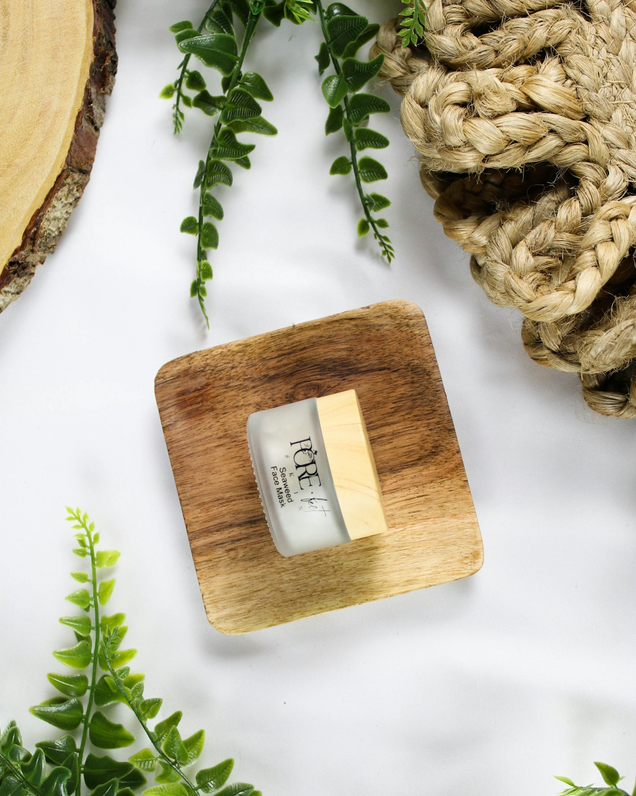
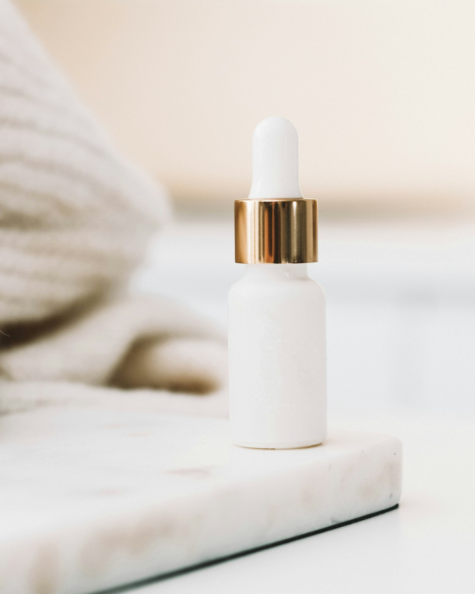

The formulation
standard
We started NŪRA after a decade in dermatology clinics, watching the same three problems recur: over-exfoliated barriers, actives dosed below any useful threshold, and labels that list twenty ingredients at 0.1%.
Why we exist
Short lists, honest doses.
Most formulas are assembled to look impressive on an ingredient list. Ours are assembled to change something measurable in eight weeks. If an ingredient cannot justify its place at the dose we can afford, it does not go in.
- Every active dosed inside the range used in published trials
- No essential oils, drying alcohols, silicones or optical brighteners
- Ceramides and fatty acids in every moisturising product
- Packaging that is refillable, recyclable and light on shipping

Process
From bench to batch.
Three stages, fourteen weeks, and a stability protocol that runs for another twelve before a formula ships.
Formulation
We work at three dose levels for every active and keep the one that performs under the least generous conditions. Nothing is included because it looks good on a label.
Stability & challenge testing
Twelve weeks at 40°C and 25°C, three freeze-thaw cycles, and a microbial challenge test. A formula that drifts in pH or separates does not launch.
Clinical wear study
200 participants, twelve weeks, self-reported plus instrument-measured hydration and barrier metrics. Results are published on each product page, including the ones that were mixed.
Ingredient index
Every active, explained.
Select an ingredient to see what it does and why we chose that percentage.
What we leave out
The exclusion list.
These are never in a NŪRA formula, at any level. Several are legally permitted above 1%; we simply do not think they earn their place.

Vegan & cruelty free
No animal testing at any stage, and no animal-derived ingredients including squalane, which we source from olives or sugarcane.
Refillable
Violet glass and aluminium vessels designed to be refilled. Postage is free on refills for the first year.
Small batch
Made in 400-unit runs so we can reformulate the moment better evidence appears, rather than defending a formula for a decade.
Published results
Efficacy claims on this site come from our wear study, including where results were modest or skin-type dependent.